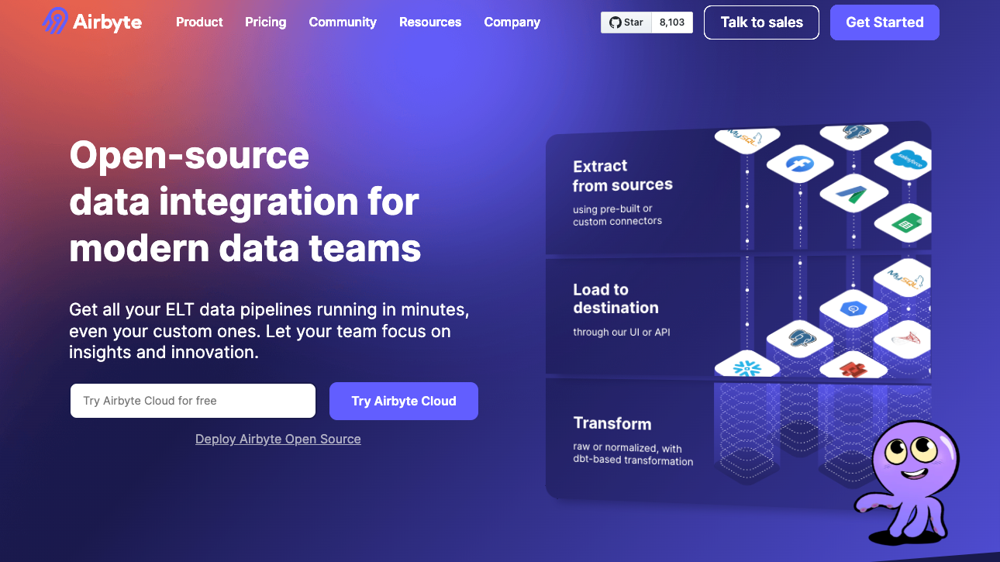
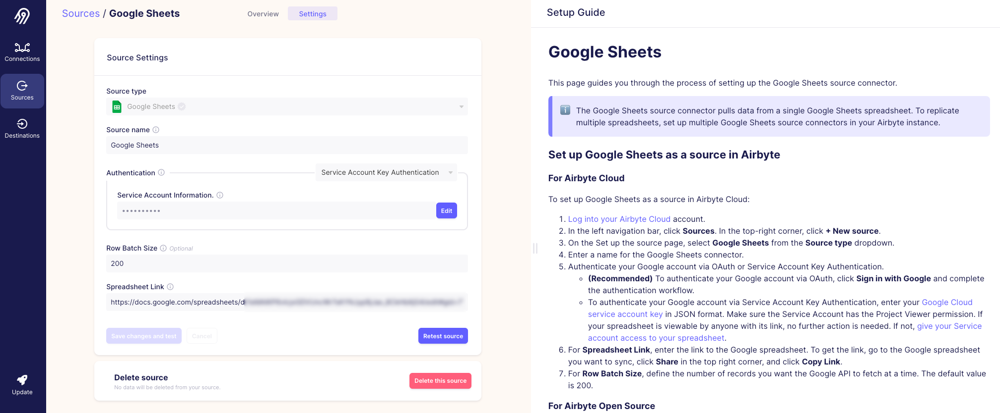
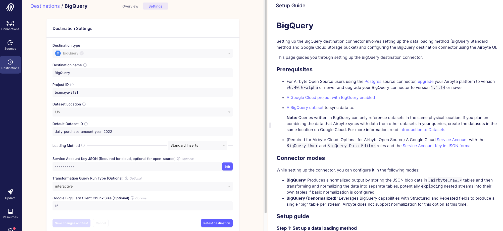
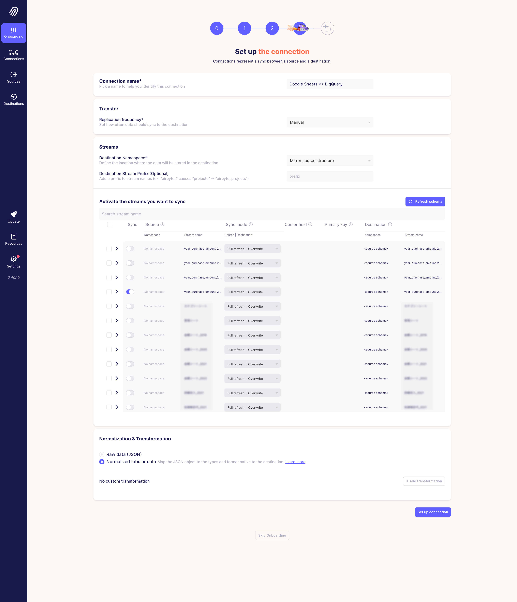
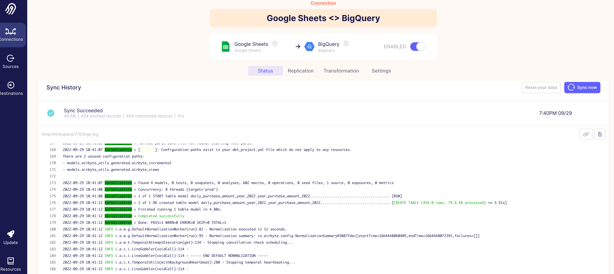
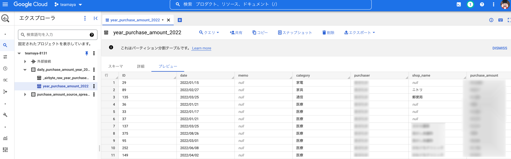

はじめに
以前から気になっていた OSS の Airbyte という EL に特化した Data Integration ツールを使ってみたかったので，今回はこれを使って以前 Embulk で実装していたスプレッドシートから BigQuery へのデータ同期処理と同じことができるか試してみた話になります．
Airbyte は良い感じのUIがあるので，UI をポチポチしながら設定していきます．
Airbyteとは？

Airbyte は OSS の ETL ツールですが，特に Extract と Load に注力しているツールになります．豊富なデータソース（Source）とターゲットソース（Destination）に対応していて，これらを設定することでデータを簡単に連携することができます．Transform 部分は内部的には dbt を使ってハンドリングしているみたいです．（Transformations with SQL (Part 1/3)）
提供形態としては，OSS とマネージドサービス（クラウド版: 有料）があり，ローカルをはじめ，AWS/GCP/Azure と各種クラウドサービスでデプロイすることができます（参考: Deploying Airbyte Open Source）．
Connector は既に用意されているもの（airbyte/airbyte-integrations/connectors/）もあれば，独自で作成することもできます．
スプレッドシートから BigQuery に連携
基本的には，Tutorial に沿って進めていきます．まずは git clone して UI を立ち上げます．
git clone https://github.com/airbytehq/airbyte.git
cd airbyte
docker compose up
docker compose を実行したら，http://localhost:8000 で UI にアクセスすることができます．
ここからは UI の世界で全て完結することができます！
Source
案内に従って進めると，まずプルダウンから今回のデータソースである Google Sheets を Source type として選択します．右側に Setup Guide があるので，見ながら設定できて親切設計だなと感じました．

以下の設定を埋めていきます．
- Source name
- 「Google Sheets」としています
- Authentication
- GCP のサービスアカウントを設定します．json ファイルの中身をコピーして貼り付けます
cat ~/.gcp/hoge_service_account.json | pbcopyでクリップボードにコピーするとやりやすいです
- Row Batch Size
- デフォルトの200にしています
- Spreadsheet Link
- 対象となるスプレッドシートの URL を設定します
- 事前にサービスアカウントでのアクセスを許可しておく必要があります
Destination
次に，プルダウンからターゲットソースである BigQuery を Destination type として選択します．

以下の設定を埋めていきます．
- Destination name
- 「BigQuery」としています
- Project ID
- GCP にアクセスして現在使っているプロジェクト ID を設定します
- Dataset Location
- 「US」で良さそう？
- Default Dataset ID
- BigQuery のデータセットとして作成される ID になります
- Loading Method
- Standard Inserts と GCS Staging の2種類あります
- Standard Inserts
- SQL INSERT で直接アップロードする方法で，非効率的なため GCS Staging を推奨しています（今回はこちらを選択）
- GCS Staging
- ファイルにレコードを書き込み，そのファイルを GCS にアップロードし，その後 COPY INTO テーブルを使用してファイルをアップロードする方法（GCS のバケットなどの情報が必要になります）
- Service Account Key JSON (Required for cloud, optional for open-source)
- GCP のサービスアカウントを設定します．json ファイルの中身をコピーして貼り付けます
- Transformation Query Run Type (Optional)
- interactive と batch の2種類あります
- Google BigQuery Client Chunk Size (Optional)
- デフォルトの15にしています
Connection
最後に，Connection のセットアップを行います．設定した Source と Destination をセットし，Replication frequency（同期頻度）, Destination Namespace や Prefix などを決めていきます．
- Transfer
- Replication frequency
- 手動実行やスケジュール実行を選択できる
- Replication frequency
- Streams
- Destination Namespace
- Mirror source structure, Destination default, Custom format の3種類あります
- Destination Stream Prefix (Optional)
- 必要に応じて付与します
- Destination Namespace
- Normalization & Transformation
- Raw data (JSON)
- Normalized tabular data
- 上記どちらかを選択しますが，Raw data だと json のままデータが格納されるので，Normalized tabular data で良いと思います
個人的に同期するスプレッドシートの各シートがそれぞれ表示されて，どれを同期するか選択して決められるというのが感動しました 🎉
今回は1シートだけ連携することにし，Custom Transform の処理はせずに単純にデータをそのまま連携していきます．

実行結果のログは以下のような感じ Sync Succeeded となっています．

Airbyte 側は大丈夫そうなので，BigQuery の方も確認してみると，ちゃんと入ってるので問題なさそうです！

おわりに
今回は，OSS の Airbyte を使ったスプレッドシートから BigQuery へのデータ同期を行ってみました．Airbyte は UI が用意されていて，直感的に操作できる+設定も簡単でデータ同期の体験としてとても良かったです！データソースが豊富なのもメリットとして大きいと思います．
Extract & Load のみしか使えていないので，次は dbt を理解して Transform も追加して処理を実行してみたいと思います．あとは他のデータパイプラインツールとの比較とかも出来たら楽しそうかなと思いました．